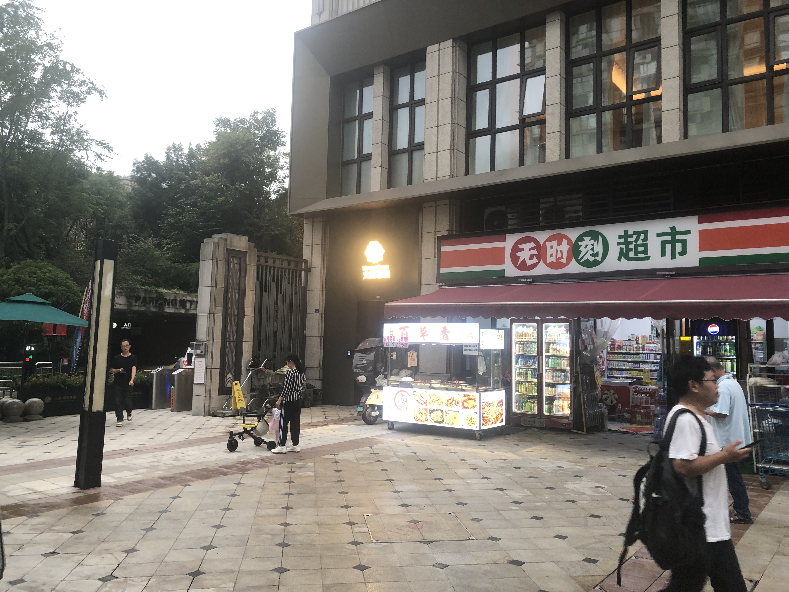

交通系统：西安站；西安北站；西安咸阳国际机场；省西安汽车站；
公共设施：陕西省人民政府；兴庆公园；
景点：临潼山（骊山）；翠华山；汤峪温泉；王顺山；西安秦岭野生动物园；洪庆山国家森林公园；鲸鱼沟竹海风景区；
高陵客运站；蓝田县汽车站；水景公园；
交通系统：北京丰台站；北京南站；清河站；
景点：长城；圆明园；北戴河；
交通系统：乌鲁木齐地窝堡机场；BRT快速公交；
公共设施：新疆美术馆；新疆图书馆；
景点：大巴扎
交通系统：廊坊站；广阳站；廊坊客运总站；廊运集团大城汽车站；廊运集团三河汽车站；
公共设施：廊坊市人民政府；廊坊市人民医院；廊坊市人民公园；廊坊市文化艺术中心；
万达广场
廊坊儿童乐园
交通系统：成都东站；成都西站；成都站(未乘坐)；成都南站(未乘坐)；双流机场(未乘坐)；天府机场(未乘坐)；邛崃市客运站；
公共设施：成都市人民政府；华西医院；成都市人民公园；
景点：武侯祠；都江堰；欢乐谷；
天府广场
外景

交通系统：商丘站；商丘东站(未乘坐)；商丘南站(未乘坐)；商丘中心汽车站；商丘机场(未乘坐，军用)；
公共设施：商丘市第一人民医院；人民公园；商丘博物馆；商丘学院；
景点：芒砀山；商丘古城；
万达广场
河南烩面
杨集
2024隐居 商洛市-柞水县-柞水溶洞 秦岭20250511